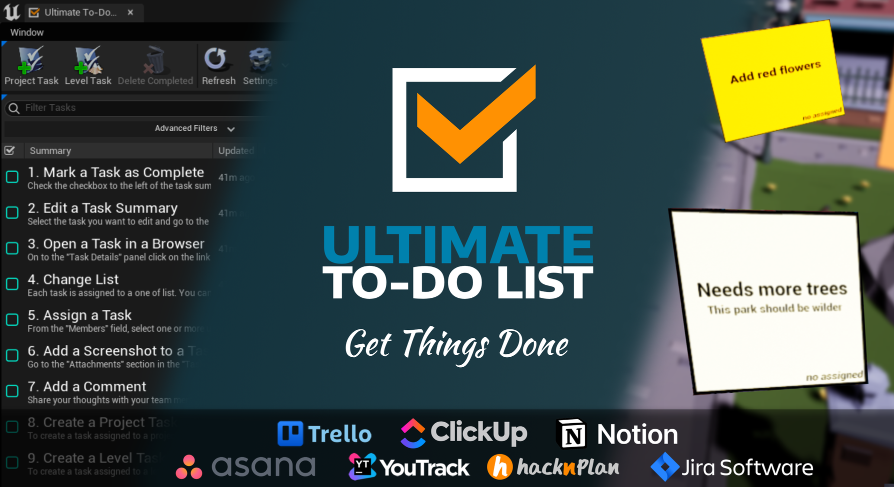
Author: Tomasz Klin
Version: 2.0.1
The Ultimate To-Do List plugin for Unreal Engine is an efficient task management tool that allows users to create, view, and edit tasks directly from the editor. The plugin features Sticky Notes that allow you to view tasks on a level, and a "Go to" button for quick access to the task location. Additionally, the plugin includes powerful sorting and filtering options and the ability to capture and edit screenshots. Users can also add comments and utilize a draft mode for completing new task details before submitting.
Your tasks stay in the service your team already uses. Ultimate To-Do List works with Trello, YouTrack, Jira Software, Asana, HacknPlan, ClickUp and Notion, each of which has a free plan, and the comparison below shows what each one gives you (see Integrations comparison). Whichever you pick, the plugin stores nothing of its own: tasks live in that service, so the rest of your team keeps working with them in a browser or a mobile app, and what you change in the editor is what they see.
In order to enable the plugin go to Edit -> Plugins, select Other category and check Enabled for Ultimate To-Do List
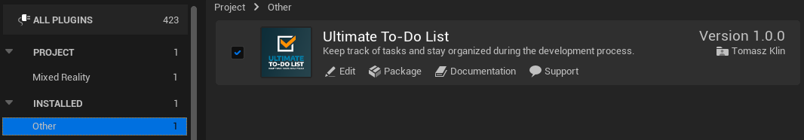
Ultimate To-Do List is available as a tab for Unreal Editor. The tab can be accessed from the Window menu.
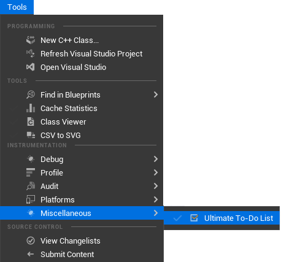
The Ultimate To-Do List is designed to support many services
---
| YouTrack | Trello | Jira Software | Asana | HacknPlan | ClickUp | Notion | |
|---|---|---|---|---|---|---|---|
| View issues | Yes | Yes | Yes | Yes | Yes | Yes | Yes |
| Edit issues | Yes | Yes | Yes | Yes | Yes | Yes | Yes |
| Report issues | Yes | Yes | Yes | Yes | Yes | Yes | Yes |
| Custom fields | Yes | Yes1 | Yes | Yes1 | No2 | Yes1 | Yes |
| Sorting by columns | Yes | Yes | Yes | Yes | Yes | Yes | Yes |
| Filtering | Yes | Yes | Yes | Yes | Yes | Yes | Yes |
| Sticky Notes | Yes | Yes | Yes | Yes | Yes | Yes | Yes |
| View attachments | Yes | Yes | Yes | Yes | Yes | Yes | Yes |
| Add attachments | Yes | Yes | Yes | Yes | Yes | Yes | Yes |
| Delete attachments | Yes | Yes | Yes | Yes | Yes | No2 | Yes |
| View comments | Yes | Yes | Yes | Yes | Yes | Yes | Yes |
| Add comment | Yes | Yes | Yes | Yes | Yes | Yes | Yes |
| Delete comment | Yes | Yes | Yes | Yes | Yes | Yes | No2 |
| View checklists | No2 | Yes | Yes | Yes | Yes | Yes | Yes |
| Edit checklists | No2 | Yes | Yes | Yes | Yes | Yes | Yes |
| Create project | No | Yes | No | Yes | Yes | Yes | No2 |
| Free version users | 10 | 15 | 10 | 10 | unlimited | unlimited | unlimited4 |
| Free version storagetotal/per file | 30 GB /500 MB | unlimited / 10 MB | 2 GB / 2GB | unlimited / 25MB | 500 MB / 5 MB | 1 GB / 100 MB | unlimited / 5 MB |
| Free version projects | unlimited | 10 | unlimited | unlimited | unlimited | unlimited lists (max 5 Spaces) | unlimited |
1 Available in the paid version of the service
2 Feature not provided by the service
3 Not yet implemented
4 Notion applies a 1,000-block limit once a workspace has more than one member
The Ultimate To-Do List user interface is made up of the following components:
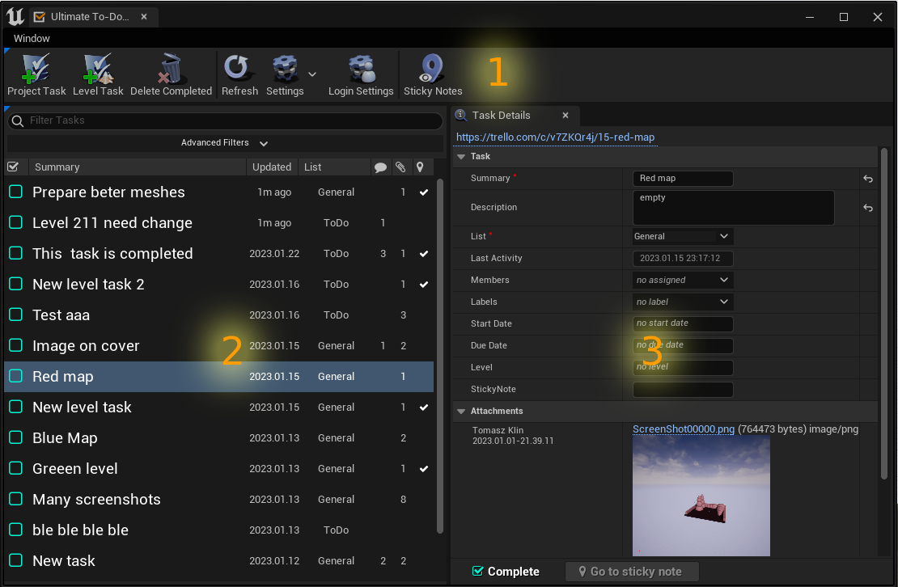
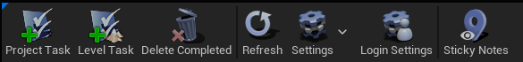
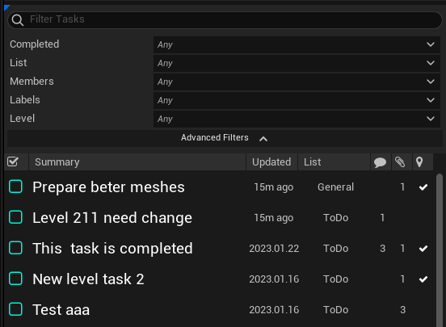
After successfully downloading all tasks from the server, they will be displayed on the task list. You can narrow down the entries to the ones of your interest by filtering the tasks. The Task List filter allows you to search for tasks using an advanced syntax similar to the Content Browser. This advanced search syntax enables you to perform sophisticated search queries and look for tasks based on key-value pairs from their properties. For more information, please refer to the Advanced Search Syntax page.
Example usage:
| Filter Phrase | Description |
|---|---|
| hello | issues containing the word 'hello' in the summary, description, or additional information fields |
| ...llo | issues containing a summary, description or additional information ended with ‘llo' |
| updated >= 2017 | updated in 2017 or later |
| updated = 201712 | updated in December of 2017 |
| updated = 20171224 | updated on 24 December of 2017 |
| updated < 20171224.13 | updated before 1 pm 24 December of 2017 |
| status != resolved | all unresolved issues |
| severity > minor | severity greater than minor |
| assignedto = john_smith | assigned to john smith |
| submitted = 2018 & status = new | new issues submitted in 2018 |
Tasks Details panel presents all the information available for the selected task.
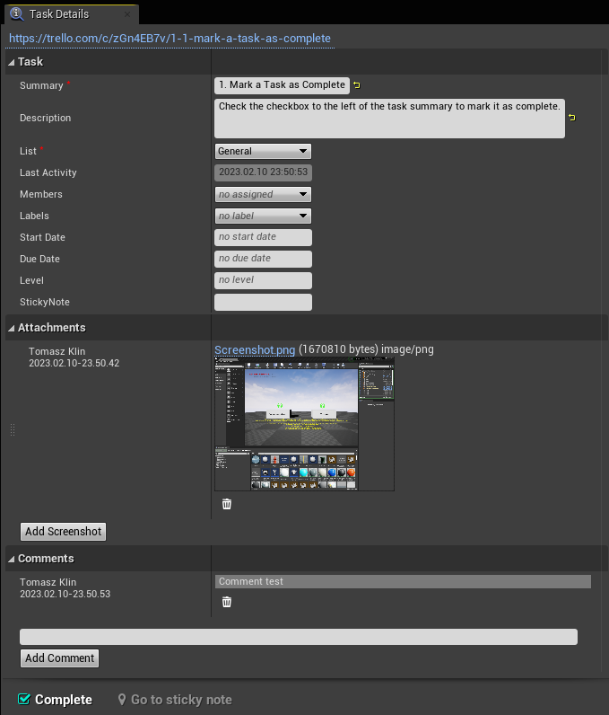
Contains all the most crucial information for the selected task.
Standard properties are available by default in the Mantis.
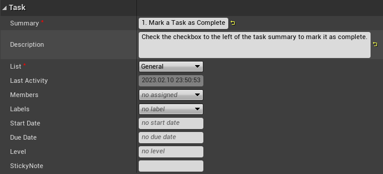
The Attachments section presents a list of attachments. For images in PNG, BMP, and JPG formats, the plugin can display thumbnails.

The Comments section presents all notes added to the issue. Here you can also add new notes.
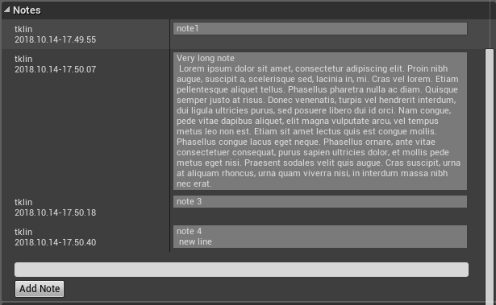
The Output panel is the central hub for gathering the log output of plugin operations. In case of any troubles, this is the first place where you should look for causes.
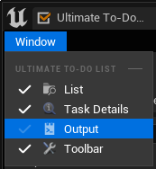
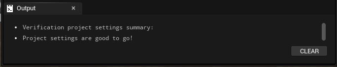
The same logs that appear in the Output panel you can also find in the Message Log tab in the Ultimate To-Do List section. You can increase logs verbose in the project settings in the section “Debug”
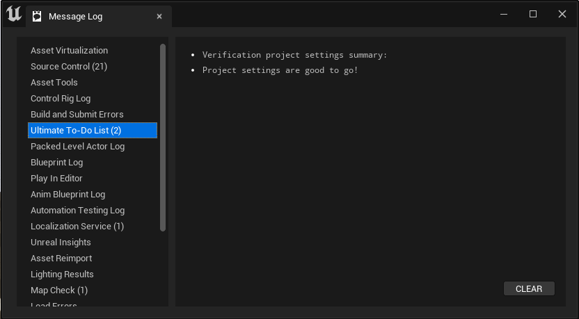
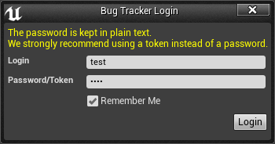
This window may be different dependent on chosen provider.
Ultimate To-Do List settings can be edited in the Editor Settings tab. Or directly from the main tool window. Settings are divided into three sections
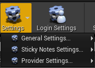
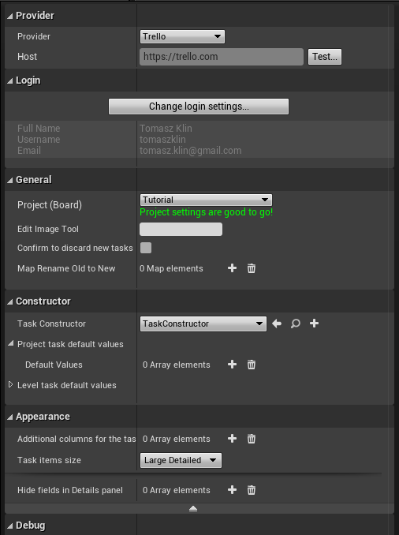
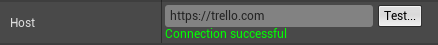
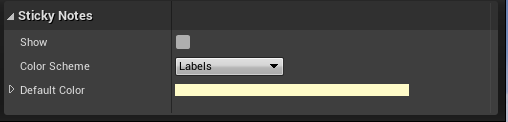
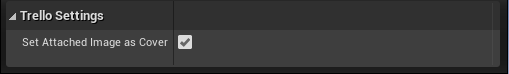
When a level task is created, the plugin automatically adds the level name, location, and orientation to the task. Each task that has this information is marked on the Tasks List in a column with
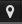
a symbol.
Thanks to the location information stored in a task, we can jump very fast to the level in the location associated with the task. To do this, just click the button
on the details panel toolbar.
All task markers associated with the currently opened level can be displayed in the level viewport. To enable this feature check
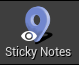
in Toolbar.
Selecting a sticky note on the level viewport opens the issue in the Details panel. Double-click on a marker jumps to the sticky note location.
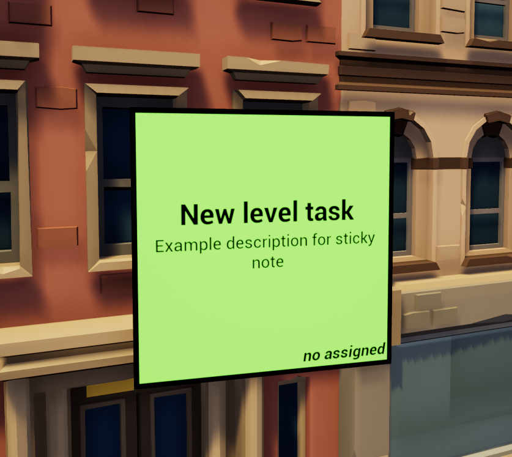
Before submitting an task, all screenshots can be edited in a user-defined image editor e.g paint.
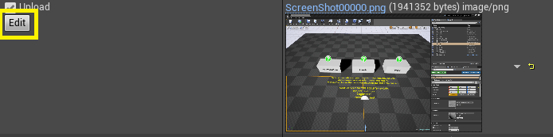
By checking Upload checkbox you can decide what files should be attached.
To increase QA team efficiency, some of the tedious work can be done automatically for them.
Task Constructor is a blueprint class that can modify any task parameters. E.g. you can add additional information like current quest name or player character skills.
To create your own Task Constructor you need to create a blueprint that inherits from TaskConstructor and overrides Construct Task function. Function Construct Task will be called for all taskss just after the issue will be reported.
In the example below for all tasks added in the game, information about the current level, the game time, and some steps to reproduce will be added.
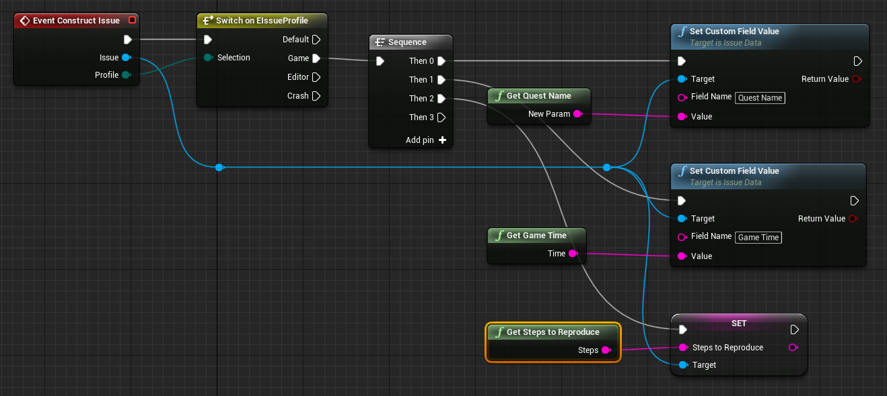
To set your Task Constructor, select an TaskConstructor class from the combo box in Project Settings.

---